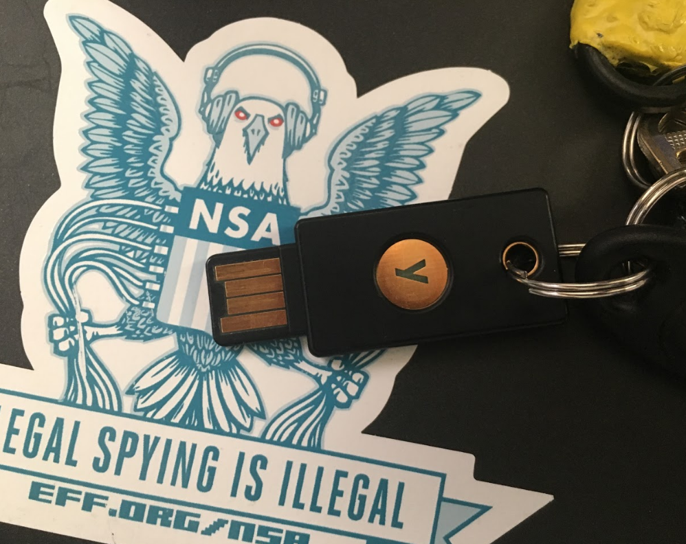
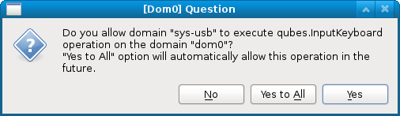

Qubes Tip: Making Yubikey OpenPGP smart cards slightly more usable
Qubes 3.2 has support for USB passthrough. This one feature has made Qubes so much more useful for me. It means that a wide variety of devices — from my laptop’s internal webcam, to plugging in smartphones to transfer data or do Android development — are finally supported. I used to have to use a separate non-Qubes computer for several tasks that I can now more conveniently and securely do within Qubes.
One way that I use USB passthrough on a daily basis is with my Yubikey. (If you’re unfamiliar, Yubikeys are small USB devices that can be used for two-factor authentication, for storing and typing static passwords, and for OpenPGP smart cards.) Normally when you use GnuPG, you keep your secret key in a file stored in ~/.gnupg. If you use an OpenPGP smart card, you don’t have your secret key on your computer at all — instead you have it stored on your smart card. With a smart card you can use your secret key, by decrypting or signing messages, but it’s designed to be impossible to export the secret key itself.
If you use the Qubes split-gpg setup, where your email client is in a VM with internet access and your ~/.gnupg directory with all of your keys in a separate VM without any network access (called, for example, gpgvm), you’re going to need to attach your Yubikey USB device to that VM every time you plug it in. And, because of how the qvm-usb tool for USB passthrough works, the command you need to run to do this will be different depending on which USB port you plug your Yubikey into.
To make things simpler for me, I wrote a script that I keep in dom0 at /usr/local/bin/yubi. After I plug in my Yubikey, I press Alt-F2, type “yubi”, and press enter, and it attaches my Yubikey to my gpgvm. It doesn’t matter what USB port I’ve plugged my Yubikey into (it even works fine with USB hubs). If I run yubi when my Yubikey is already attached to my gpgvm, it detaches and then re-attaches it, which should clear up any problems. I thought I’d share it. Here’s the script:
#!/bin/bash
USB_DEVICE=`qvm-usb |grep Yubikey |cut -f1`
# Is it already attached
qvm-usb |grep $USB_DEVICE | grep "(attached to gpgvm)"
if [ $? -eq 0 ]; then
echo "detatching yubikey"
qvm-usb -d $USB_DEVICE
sleep 1
fi
echo "attaching yubikey"
qvm-usb -a gpgvm $USB_DEVICE
One final note: When you plug your Yubikey into your computer (and you’re using a USB qube), a question might pop up in a dom0 window asking if you’d like to allow the USB keyboard you plugged in to sys-usb to type in dom0. This is because Yubikeys advertise themselves as USB keyboards — this makes it possible to press the button on the Yubikey to type a two-factor authentication code.

After you run the yubi script, the same question in dom0 will pop up, but this time asking if you want to allow the keyboard from gpgvm to type in dom0. You can customize how all of this works by editing the file /etc/qubes-rpc/policy/qubes.InputKeyboard in dom0. Here’s what mine looks like:
gpgvm dom0 deny
$anyvm $anyvm ask
This means never allow keyboards in gpgvm to type in dom0, and for all other situations ask.


Legacy comments, imported from previous version of this blog:
Johny Dep
January 4, 2017 12:04 PM
Micah, please use cryptolog for making logs on your blog https://github.com/efforg/cryptolog
Russian No Logs Policy
January 4, 2017 02:59 PM
As a 'Russian hacker' I approve ;-)
Russian Thou Shalt Not Keep Logs Policy
January 6, 2017 07:01 AM
As a fellow Russian hacker I double-approve :)
Kopimi Security
December 2, 2016 01:03 PM
I have the FIDO-key and the NANO-key, which qvm-usb in dom0 reports as: sys-usb:3-1.4 1050:0120 Yubico_Security_Key_by_Yubico sys-usb:3-1.2 1050:0407 Yubico_Yubikey_4_OTP+U2F+CCID
So grepping for "Yubikey" is probably specific to that type of key from the company Yubico.
Jon
December 2, 2016 11:42 AM
Now that Trezor hardware wallet supports GPG do you think that is more secure to use than Yubikey?
https://github.com/romanz/trezor-agent
abc123
December 18, 2016 09:54 AM
What are your thoughts on Yubico's move?
https://www.yubico.com/2016/05/secure-hardware-vs-open-source/
Please do also answer Jon in the comments...
HideMyTorUsage
December 27, 2016 09:06 AM
What if one wants to allow keyboard and mouse directly to dom0 but doesn't want them to pass through sys-usb (using mouse->sys-usb makes the mouse pointer incredibly slow and buggy)?
Bob
December 2, 2016 01:47 AM
Thanks for the tip! :D